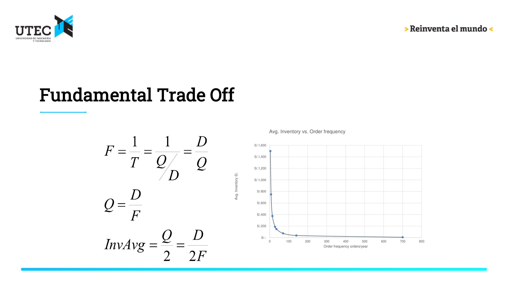
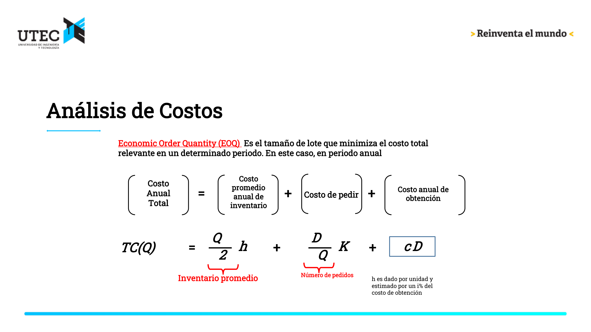
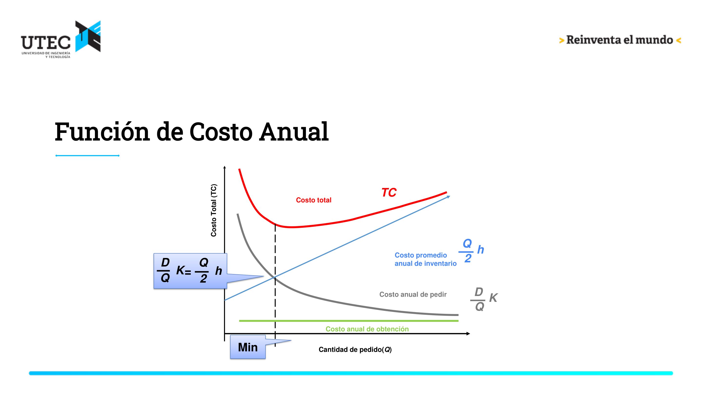
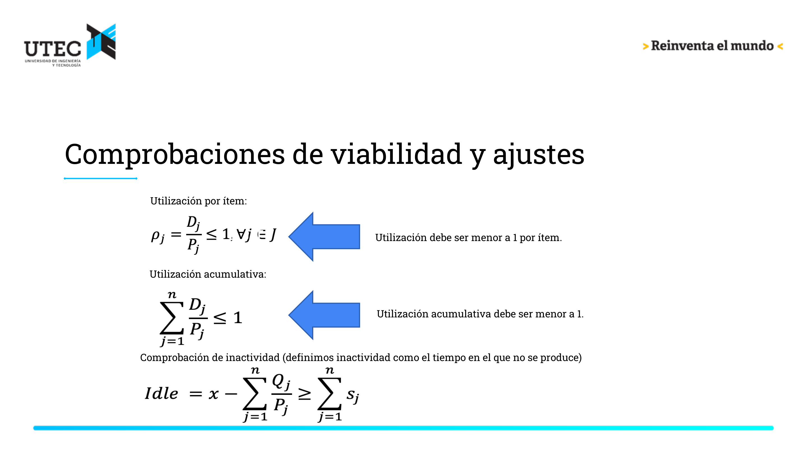

Este documento transforma el modulo en una guia de estudio. La idea es que puedas leer la intuicion, revisar las formulas y ejecutar los bloques de codigo para comprobar resultados o cambiar supuestos.
Objetivo del modulo: comprender EOQ (Economic Order Quantity) y EPQ (Economic Production Quantity) para decidir tamanos de lote, frecuencia de pedido y puntos de reorden minimizando costos operacionales.
Mapa del modulo
Entornos y estrategias basicas de inventarios.
Puntos de reorden.
Analisis de sensibilidad en EOQ.
Entornos de produccion y lote economico de produccion, EPQ.
1. Entornos y estrategias basicas
Un sistema de inventarios se caracteriza por varias decisiones y supuestos:
Demanda: constante o variable, conocida o aleatoria, continua o discreta.
Lead time: instantaneo, constante o variable.
Revision: continua o periodica.
Relacion entre items: independientes, correlacionados o perfectamente dependientes.
Capacidad y recursos: limitados o ilimitados.
Descuentos: ninguno, por todas las unidades o incremental.
Exceso de demanda: backorders o ventas perdidas.
Horizonte: un periodo, finito o infinito.
Variables principales
Simbolo
Significado
Unidad tipica
\(Q\)
Tamano de lote o cantidad pedida
unidades/pedido
\(Q^*\)
EOQ, lote economico de compra
unidades/pedido
\(D\)
Demanda promedio
unidades/tiempo
\(K\)
Costo fijo de ordenar
dinero/pedido
\(h\)
Costo de mantener inventario
dinero/unidad-tiempo
\(c\)
Costo unitario de compra/produccion
dinero/unidad
\(T\)
Tiempo de ciclo entre pedidos
tiempo
\(F\)
Frecuencia de pedidos, \(F=1/T\)
pedidos/tiempo
\(TC\)
Costo total anual
dinero/tiempo
Regla de oro: antes de aplicar formulas, revisa que todas las unidades usen el mismo periodo de tiempo, por ejemplo anual.
Estrategias extremas
JIT: pedidos muy frecuentes, inventario promedio bajo, mas actividad de pedidos.
Una sola orden: pocos pedidos, inventario promedio alto.
Hibrida: balance entre costos de ordenar y costos de mantener inventario.

Trade-off entre inventario promedio y frecuencia
2. Modelo EOQ
EOQ busca el tamano de pedido que minimiza el costo total relevante. El costo anual total se compone de:
\[
TC(Q) = cD + \frac{D}{Q}K + \frac{Q}{2}h
\]
Donde:
\(cD\) es el costo anual de compra.
\(\frac{D}{Q}K\) es el costo anual de ordenar.
\(\frac{Q}{2}h\) es el costo anual de mantener inventario.
Si el precio unitario \(c\) no cambia con \(Q\), el termino \(cD\) no afecta la decision del lote optimo. El costo relevante para optimizar es:
\[
TRC(Q) = \frac{D}{Q}K + \frac{Q}{2}h
\]
La cantidad optima es:
\[
Q^* = \sqrt{\frac{2DK}{h}}
\]
El tiempo de ciclo optimo es:
\[
T^* = \frac{Q^*}{D}
\]
La frecuencia optima de pedidos es:
\[
F^* = \frac{D}{Q^*}
\]

Componentes del costo total EOQ

Curva de costo anual y minimo
# EOQ en Reoq <-function(D, K, h, c=0){ Q <-sqrt(2* D * K / h) orders <- D / Q T <- Q / D holding <- Q /2* h ordering <- D / Q * K relevant <- holding + ordering total <- c * D + relevantlist(Q=Q, pedidos_por_periodo=orders, T_periodos=T, costo_mantener=holding,costo_ordenar=ordering, costo_relevante=relevant, costo_total=total)}eoq(D=1000*52, K=100, h=0.5*52)
reorder_point <-function(D_per_period, lead_time_periods, safety_stock=0){ D_per_period * lead_time_periods + safety_stock}# Ejemplo Promart: 1125 unidades al ano, 50 semanas/ano, lead time 1 semanaD_anual <-1125D_semana <- D_anual /50reorder_point(D_semana, lead_time_periods=1)
[1] 22.5
4. Analisis de sensibilidad EOQ
Un resultado importante del modulo: EOQ suele ser robusto. Pequenos errores en la demanda no necesariamente producen grandes aumentos en el costo total.
Caso Promart:
Demanda estimada: \(D=1125\) O’rings/ano.
Costo fijo de pedido: \(K=20\).
Costo unitario: \(c=1\).
Tasa anual de mantenimiento: \(25\%\) del valor del producto, entonces \(h=0.25\).
Gold importa salamis para satisfacer una creciente demanda en San Miguel. El propietario, David Santillana, estima que la demanda de salamis es bastante estable, de 175 unidades por mes. El proveedor vende a $1.85 por unidad. Cada pedido implica un costo fijo de $200 y el plazo de entrega es de 3 semanas. Los costos de mantenimiento se estiman en 22% (costo de capital) + 3% (espacio) + 2% (impuestos y seguros) = 27% anual sobre el costo unitario de compra.
¿Cuántos salamis debería haber traído Gold y con qué frecuencia debería pedirlos?
¿Cuántos salamis debería tener Gold a mano cuando llame a su hermano para enviar otro envío?
Supongamos que los salamis se venden a $3 cada uno. ¿Son estos salamis un producto rentable para Gold? Si es así, ¿qué beneficio anual puede esperar obtener de este artículo? (Supongamos que opera el sistema de manera óptima).
Si los salamis tienen una vida útil de sólo 4 semanas, ¿cuál es el problema con la política que dedujiste en el inciso (a)? ¿Qué modificaciones deberías realizar a la política? ¿Sería todavía rentable?
b) Punto de reorden (\(R\)) El consumo durante el lead time (3 semanas) es: \[ R = D_{\text{semanal}} \times LT = \left(\frac{2100}{52}\right) \times 3 \approx 121.15 \text{ unidades} \]
d) Restricción de perecibilidad (vida útil de 4 semanas) El tiempo de ciclo óptimo \(T^* \approx 32.11\) semanas excede la vida útil de los salamis (4 semanas). Por lo tanto, el lote óptimo no es viable porque el producto se dañaría. Modificación: Se debe forzar un tiempo de ciclo máximo de \(T = 4\) semanas \(= 4/52\) años. El nuevo tamaño de lote es: \[ Q_{\text{perecible}} = D \times T = 2100 \times \frac{4}{52} \approx 161.54 \text{ unidades/pedido} \] Nuevo costo total relevante (\(TRC\)): \[ TRC_{\text{perecible}} = \frac{2100}{161.54}(200) + \frac{161.54}{2}(0.4995) \approx 2,600.00 + 40.34 = 2,640.34 \text{ USD/año} \] Nuevo Costo total anual (\(TC\)): \[ TC_{\text{perecible}} = cD + TRC_{\text{perecible}} = 3,885 + 2,640.34 = 6,525.34 \text{ USD/año} \] Nueva Utilidad neta: \[ \text{Utilidad}_{\text{perecible}} = \text{Ingresos} - TC_{\text{perecible}} = 6,300 - 6,525.34 = -225.34 \text{ USD/año} \]Conclusión: Con la política restringida por perecibilidad, el producto deja de ser rentable, generando pérdidas anuales de $225.34.
Implementación en R
# Funciones baseeoq_complete <-function(D, K, h, c, price=0) { Q <-sqrt(2* D * K / h) orders <- D / Q T_years <- Q / D holding <- (Q /2) * h ordering <- (D / Q) * K trc <- holding + ordering tc <- c * D + trc revenue <- price * D profit <- revenue - tclist(Q=Q, orders=orders, T_years=T_years, holding=holding, ordering=ordering, TRC=trc, TC=tc, revenue=revenue, profit=profit)}# Datos del problemaD_month <-175D <- D_month *12K <-200c <-1.85i <-0.27h <- i * cweeks_per_year <-52LT_weeks <-3price <-3.00# a, b, c) Política óptima (sin restricciones)opt <-eoq_complete(D, K, h, c, price)R_opt <- (D / weeks_per_year) * LT_weeks# d) Política restringida por perecibilidad (T = 4 semanas)T_restricted_years <-4/ weeks_per_yearQ_restricted <- D * T_restricted_yearsordering_restr <- (D / Q_restricted) * Kholding_restr <- (Q_restricted /2) * htrc_restr <- ordering_restr + holding_restrtc_restr <- c * D + trc_restrprofit_restr <- (price * D) - tc_restr# Tabla comparativacomparativo <-data.frame(Variable =c("Tamaño de lote (Q)", "Pedidos por año (F)", "Tiempo de ciclo (semanas)", "Punto de reorden (R)", "Costo de ordenar ($/año)", "Costo de mantener ($/año)", "Costo Total Relevante (TRC)", "Costo de adquisición (c*D)", "Costo Total Anual (TC)", "Utilidad Anual ($/año)"),Politica_Optima =c(round(opt$Q, 2), round(opt$orders, 2), round(opt$T_years * weeks_per_year, 2), round(R_opt, 2), round(opt$ordering, 2), round(opt$holding, 2), round(opt$TRC, 2), round(c*D, 2), round(opt$TC, 2), round(opt$profit, 2)),Politica_Perecible =c(round(Q_restricted, 2), round(D/Q_restricted, 2), 4.00, round(R_opt, 2), round(ordering_restr, 2), round(holding_restr, 2), round(trc_restr, 2), round(c*D, 2), round(tc_restr, 2), round(profit_restr, 2)))knitr::kable(comparativo, caption="Comparación de Políticas para Venta de Salamis")
Comparación de Políticas para Venta de Salamis
Variable
Politica_Optima
Politica_Perecible
Tamaño de lote (Q)
1296.80
161.54
Pedidos por año (F)
1.62
13.00
Tiempo de ciclo (semanas)
32.11
4.00
Punto de reorden (R)
121.15
121.15
Costo de ordenar (\(/año) | 323.87| 2600.00|
|Costo de mantener (\)/año)
323.87
40.34
Costo Total Relevante (TRC)
647.75
2640.34
Costo de adquisición (c*D)
3885.00
3885.00
Costo Total Anual (TC)
4532.75
6525.34
Utilidad Anual ($/año)
1767.25
-225.34
Resumen de resultados:
Métrica
Política Óptima (EOQ)
Política con Perecibilidad
Unidades
Lote (\(Q\))
1296.8
161.54
unidades
Tiempo de ciclo (\(T\))
32.11
4.00
semanas
Punto de reorden (\(R\))
121.15
121.15
unidades
Costo Relevante (TRC)
647.75
2640.34
USD/año
Costo Total Anual (TC)
4532.75
6525.34
USD/año
Utilidad Anual
1767.25
-225.34
USD/año
Conclusiones del análisis:
Inviabilidad de la EOQ clásica: El lote óptimo de 1296.8 unidades requiere que el producto permanezca en inventario un promedio de 16.06 semanas (con un ciclo completo de 32.11 semanas), lo cual supera el límite de caducidad de 4 semanas.
Impacto económico drástico: Forzar el ciclo a 4 semanas para evitar mermas requiere hacer 13 pedidos al año (casi uno cada 4 semanas), lo que dispara el costo anual de ordenar de $323.87 a $2600.
Pérdida de rentabilidad: Aunque el costo de mantener baja sustancialmente, el incremento en los fletes/costos fijos de pedido absorbe todo el margen, convirtiendo una utilidad óptima de $1767.25 en una pérdida de $-225.34. El negocio no es viable bajo estas condiciones de flete a menos que se reduzca \(K\) o se incremente el precio de venta \(p\).
Caso 2: Café colombiano
Enunciado:
Una cafetería vende café colombiano a ritmo constante de 280 lb/año. El proveedor cobra $2.40 por libra. El costo fijo por pedido es $45. La tasa anual de mantenimiento es 20%. Lead time es 3 semanas.
Datos del problema:
Variables
Símbolos
Valores
Unidades
Demanda anual
\(D\)
280
lb/año
Costo fijo por pedido
\(K\)
45
USD/pedido
Costo unitario
\(c\)
2.40
USD/lb
Tasa anual mantenimiento
\(i_h\)
0.20
fracción anual
Costo de mantener por unidad
\(h=i_h\times c\)
—
USD/unidad-año
Lead time
\(LT\)
3
semanas
Semanas por año
—
52
semanas/año
Modelo aplicable:
EOQ clásico y análisis de sensibilidad ante error en \(K\).
# Sensibilidad: variación en K para Café colombianoKs <-c(15, 30, 45, 60, 90)sens_k <-lapply(Ks, function(K_try){ Q_opt <-eoq(D, K_try, h)$Q trc_opt <-relevant_cost(D, Q_opt, K_try, h)data.frame(K=K_try, Q_opt=round(Q_opt,2), TRC_opt=round(trc_opt,2))})knitr::kable(do.call(rbind, sens_k), caption='Sensibilidad: K - Café colombiano')
Sensibilidad: K - Café colombiano
K
Q_opt
TRC_opt
15
132.29
63.50
30
187.08
89.80
45
229.13
109.98
60
264.58
127.00
90
324.04
155.54
Conclusiones:
Proporción de cambio en costos al usar un \(K\) incorrecto se muestra en la tabla; EOQ suele ser robusta pero conviene revisar sensibilidad cuando \(K\) es incierto.
El punto de reorden \(R\) permite cubrir el consumo durante el lead time; añadir stock de seguridad si la demanda es estocástica.
6. Modelo EPQ
EOQ asume que el pedido llega de golpe. EPQ aplica cuando producimos internamente a una tasa finita \(P\) mientras la demanda ocurre a tasa \(D\).
Durante la produccion, el inventario crece con pendiente \(P-D\). Cuando se detiene la produccion, el inventario baja con pendiente \(-D\).
Datos principales: - Tasa de producción \(P\): \(10,000 \text{ lb/día} \times 250 \text{ días/año} = 2,500,000 \text{ lb/año}\). - Demanda anual \(D\): \(600,000 \text{ lb/año}\). - Costo fijo por lote \(K\): \(\$1,500\). - Costo variable unitario \(c\): \(\$3.50/\text{lb}\). - Tasa anual de mantenimiento \(i\): \(22\% \text{ (capital)} + 12\% \text{ (almacenaje)} = 34\%\). - Días laborales: \(250\).
# EPQ en Repq <-function(D, K, h, P, c=0){if(P <= D) stop('EPQ requiere P > D') factor <-1- D / P Q <-sqrt(2* D * K / (h * factor)) tiempo_ciclo_years <- Q / D tiempo_produccion_years <- Q / P setup <- D / Q * K holding <- Q /2* factor * h relevant <- setup + holding total <- c * D + relevantlist(Q=Q, tiempo_ciclo_years=tiempo_ciclo_years, tiempo_produccion_years=tiempo_produccion_years,inventario_promedio=Q * factor /2, costo_setup=setup, costo_holding=holding,costo_relevante=relevant, costo_total=total)}# DatosD <-600000P_day <-10000working_days <-250P <- P_day * working_daysK <-1500c <-3.50i <-0.34h <- c * i# Cálculowod <-epq(D, K, h, P, c)tiempo_ciclo_days <- wod$tiempo_ciclo_years * working_daystiempo_prod_days <- wod$tiempo_produccion_years * working_daystiempo_inactivo_days <- tiempo_ciclo_days - tiempo_prod_days# Ganancia y comparación Kprecio_venta <-3.90ingresos <- D * precio_ventaganancia_anual <- ingresos - wod$costo_totalwod_nuevo <-epq(D, K=500, h=h, P=P, c=c)ahorro_relevante <- wod$costo_relevante - wod_nuevo$costo_relevanteresults_wod <-data.frame(Metric=c('Q_star_EPQ','Inventario_promedio','Tiempo_produccion_days','Tiempo_inactividad_days','Ganancia_anual_USD','Ahorro_relevante_reducir_K'),Value=c(round(wod$Q,2), round(wod$inventario_promedio,2), round(tiempo_prod_days,2), round(tiempo_inactivo_days,2), round(ganancia_anual,2), round(ahorro_relevante,2)),Units=c('lb','lb','dias','dias','USD/año','USD/año'))knitr::kable(results_wod, caption='Resultados: Wod Chemical Company')
Resultados: Wod Chemical Company
Metric
Value
Units
Q_star_EPQ
44612.44
lb
Inventario_promedio
16952.73
lb
Tiempo_produccion_days
4.46
dias
Tiempo_inactividad_days
14.13
dias
Ganancia_anual_USD
199652.51
USD/año
Ahorro_relevante_reducir_K
17052.86
USD/año
# Sensibilidad Wod: comparar K original vs K reducido y variar hKs <-c(500, 1000, 1500, 3000)sens_wod <-lapply(Ks, function(K_try){ w <-epq(D, K_try, h, P, c)data.frame(K=K_try, Q=round(w$Q,2), Inventario_promedio=round(w$inventario_promedio,2), Costo_relevante=round(w$costo_relevante,2))})knitr::kable(do.call(rbind, sens_wod), caption='Sensibilidad: K - Wod Chemical')
El tiempo inactivo del ciclo debe alcanzar para cubrir la suma de tiempos de set-up.
Si no alcanza, se debe ajustar el tiempo de ciclo; si la utilizacion acumulada es mayor o igual a 1, el sistema es inviable.

Comprobaciones de viabilidad
Calculo analitico de ciclo comun (Ejemplo Servidores Informaticos)
Para ensamblar 4 tipos de servidores en la misma planta, si la produccion rotativa utiliza los mismos recursos, buscamos un tiempo de ciclo optimo \(T\) que sea comun para todos los productos y minimice los costos de setup combinados y el costo de mantenimiento.
La ecuacion del costo total relevante conjunto es la suma de los costos individuales en funcion de \(T\):
Si existen tiempos de set-up (ej. limpiar la maquina entre producto y producto, \(\sum s_j\)), se debe asegurar que el tiempo inactivo durante \(T^*\) sea suficiente para cubrir estas preparaciones. Si no es suficiente, el tiempo de ciclo debe alargarse por la fuerza para dar cabida a los setups.
9. Resumen ejecutivo
EOQ determina el lote que minimiza el costo relevante de ordenar y mantener inventario.
La frecuencia de pedidos y el inventario promedio tienen relacion inversa.
El punto de reorden debe usar posicion de inventario, no solo inventario fisico.
EOQ es robusto ante errores moderados de demanda.
EPQ adapta EOQ a produccion con tasa finita.
En produccion multi-producto, la viabilidad depende de capacidad, utilizacion y tiempos de set-up.
10. Checklist para resolver ejercicios
Homogeneiza unidades de tiempo.
Identifica \(D\), \(K\), \(h\), \(c\) y, si aplica, \(P\).
Decide si es EOQ, punto de reorden, sensibilidad o EPQ.
Calcula \(Q^*\).
Calcula frecuencia y tiempo de ciclo.
Calcula punto de reorden si hay lead time.
Verifica si hay restricciones reales: perecibilidad, capacidad, setup, descuentos o vida util.
Profundización y guía técnica (no una transcripción)
Esta sección amplía la intuición con derivaciones formales, reglas prácticas y pasos concretos para resolver problemas reales. Los bloques de código del documento pueden usarse para calcular resultados numéricos a partir de los datos del enunciado.
Derivación rápida de EOQ
Costo relevante: \(TRC(Q)=\dfrac{D}{Q}K+\dfrac{Q}{2}h\). Derivando e igualando a cero: \[\frac{dTRC}{dQ}=-\frac{D}{Q^2}K+\frac{h}{2}=0\] De donde: \[Q^*=\sqrt{\frac{2DK}{h}}\] Verifique la segunda derivada \(\dfrac{d^2TRC}{dQ^2}=2DK/Q^3>0\) para confirmar mínimo.
Implicaciones de la fórmula - \(Q^*\propto\sqrt{D}\): duplicar la demanda aumenta \(Q^*\) en factor \(\sqrt{2}\approx1.414\). - \(Q^*\propto\sqrt{K}\) y \(Q^*\propto1/\sqrt{h}\): subir \(K\) aumenta el lote; subir \(h\) lo reduce.
Sensibilidad y robustez Si usamos un \(Q\) calculado con \(D'\) pero la demanda real es \(D\), el cambio relativo en costos relevante suele ser pequeño porque TRC tiene mínimo amplio — ejecute las tablas de sensibilidad incluidas más arriba para cuantificarlo en su caso.
Punto de reorden y stock de seguridad - Reorden determinista: \(R=D\times LT\). - Con demanda estocástica y desviación estándar de la demanda durante LT igual a \(\sigma_{DLT}\), un enfoque común es: \[R = D\times LT + z\sigma_{DLT}\] donde \(z\) es el cuantil normal asociado al nivel de servicio deseado.
Derivación EPQ (esencial) Inventario máximo durante producción: \(I_{max}=Q(1-D/P)\). Inventario promedio: \(I_{prom}=\dfrac{Q}{2}(1-D/P)\). Reemplazando en TRC se obtiene la fórmula usada en el cuerpo del documento y: \[Q^*_{EPQ}=\sqrt{\frac{2DK}{h(1-D/P)}}\] Asegúrese de que \(P>D\) (caso contrario el modelo no es viable).
Cómo abordar un caso práctico (pasos reproducibles) 1. Homogeneice unidades de tiempo (p. ej. año). 2. Identifique \(D,K,h,c\) y si aplica \(P\) y \(LT\). 3. Elija modelo: EOQ (compra), EPQ (producción), o punto de reorden (si hay lead time o variabilidad). 4. Calcule \(Q^*\) y luego \(T^*,F^*\). 5. Calcule \(R\) y, si hay incertidumbre, agregue \(z\sigma\) como stock de seguridad. 6. Evalúe restricciones prácticas: lotes mínimos, capacidad, perecibilidad, descuentos por cantidad.
Notas prácticas y recomendaciones - Siempre compruebe unidades; convierta tiempo y tasas al mismo horizonte. - Cuando existan descuentos por cantidad o costos no lineales, la EOQ clásica puede no ser válida: use análisis por regiones o modelos con descuentos. - Para productos perecibles o con vida útil < ciclo de reabastecimiento, prefiera análisis por periodo finito o modelos con pérdida de demanda. - Para producción multiproducto, calcule utilización acumulada \(\sum_j D_j/P_j\) y asegure que sea <1.